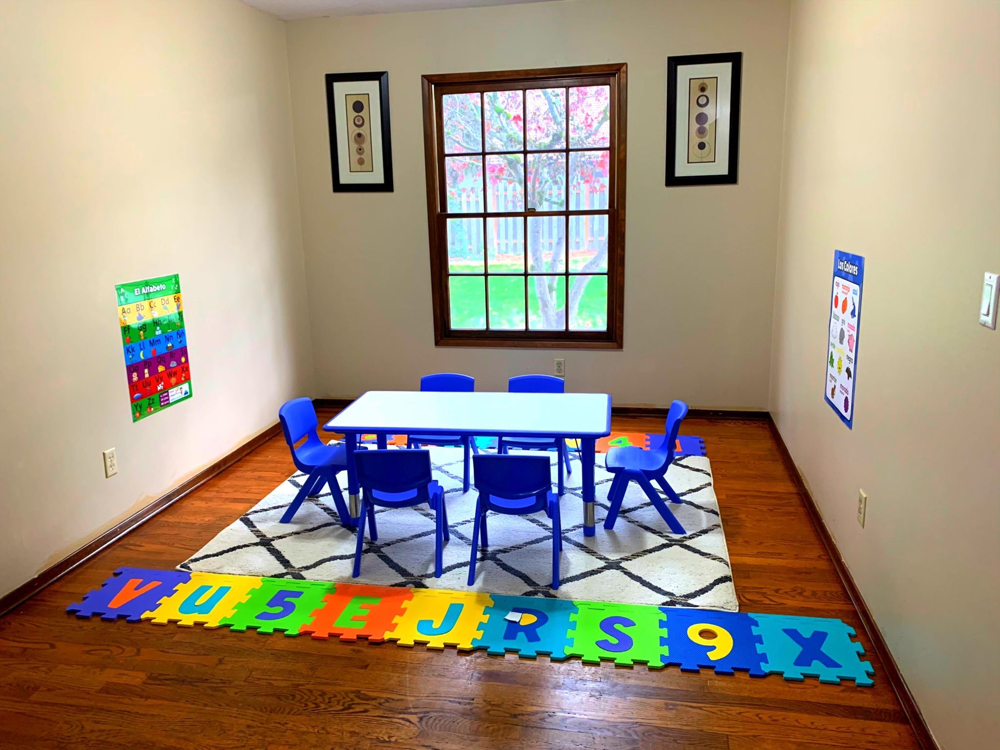
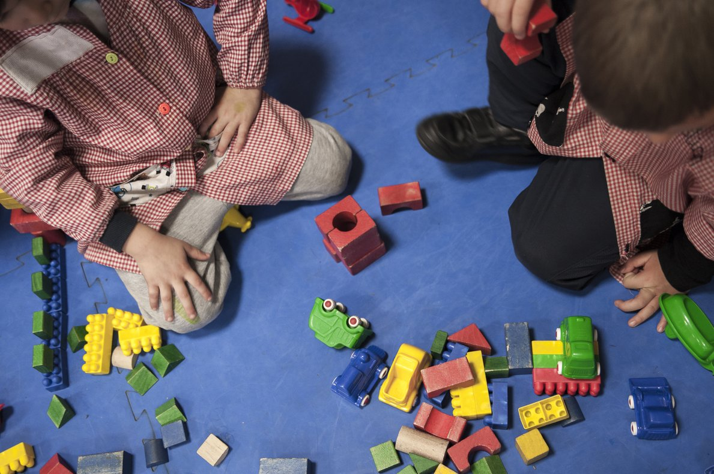

Childhood is a fundamental stage in people's lives, as well as a healthy childhood in a welcoming environment, it usually forms a full adult, the main values of values and behaviors in parenting are key to the future.
This idea is born through the understanding and the importance that colors have in the growth and learning of children and how they are influenced in their cognitive development, therefore Colorines represents and encompasses everything that the child requires for their care and training in its first years of life.
Colorines follows an educational teaching philosophy based on the Reggio Emilia approach, with an emerging curriculum bilingual. We strive to create a partnership with each family to create a positive environment for each child.
Our focus will be to create an active school, where research and reflection always prevails within an appropriate surgical environment of children's interests and their responses and interactions with the environment, which facilitate the relations of the school and family so that possible sea child welfare.
In colorines the children are immersed in Spanish approximately 90% of the day. All children are welcome to our nursery.
Colorines offers an environment rich in spoken language, songs and reading, for babies and walkers, they have many opportunities throughout the day, throughout all their activities, to communicate with other people and participate in reciprocal interactions. A good environment is important for the early development of children's brains and can have a strong impact on early language, vocabulary, reading and math skills, as well as on children's social and emotional development.
Characteristic of our infants and toddlers program:
* Promotes personal care that responds to the individual needs and interests of each child.
* Frequent interactions between the teacher and children that promote socialization and exploration.
* Fun experiences that strengthen educational, social and physical skills.
* Research-based curricular experiences that have been designed to ensure exploration and meaningful learning.
* Age-appropriate activities and materials that build trust, knowledge, self-esteem and love for learning.
Every day babies and children grow and learn at phenomenal speed! Through the game our curriculum is designed to expand the natural curiosity of children and cope with the skills that are the basis of lifelong growth and learning.
Our program for preschoolers prepares them for kindergarten.
Preschoolers prepare for their first big step in their educational journey - Kindergarten! Colorines preschool program prepares children for school by teaching them concepts such as letters, numbers, geometric figures and colors and at the same time instills a sense of independence, trust and love for learning. Our early education curriculum is varied with instructive and gaming experiences. Children are taught all the concepts necessary to foster the success of their transition to kindergarten.
Patricia Gutiérrez.
Founder and childcare professional.
I am of Venezuelan origin, I speak spanish and I have english as a second language. I have a degree in business administration in my country. I have 4 years of experiences in child care here in Oregon, I have a credential for the national CDA child development accreditation program. The CDA program is designed to evaluate and accredit early childhood education professionals.
Since I was a child I have been attracted to children and their education and that is why I am heading for my future. My experience as a student during all these years has determined my own professional philosophy.
I consider the child as potentially prepared, curious and interested to build their learning, using what the environment tends in their social interaction. From the methodological point of view, I develop the child's intellect through symbolic expression, stimulating him to explore his environment and use his thousand languages: word, movement, drawing, painting, construction, shadow theater, drama, music, sculpture . Similarly, he respected the rhythm of each child, without rushing them to change activity.
My philosophy conceives as indispensable the emotional well-being of the child so that he can learn, and in the same way, the well-being of mine and parents. I propose to others that the use of space, setting and material should favor communication and relationship between children, as well as activities that promote various options and the solution of problems in the learning process.
As for me, teaching offers an opportunity for learning and continuous growth. One of my hopes as a child care professional is to instill the love of children's learning, since I share my own passion for learning with them. Helping children develop a deep love and respect for themselves and others will create a safe environment where through an open exchange of ideas and a prudent approach to discipline will be possible.


{kind=link}
{kind=link}
{kind=link}
{kind=link}
{kind=link}
{kind=link}
{kind=link}